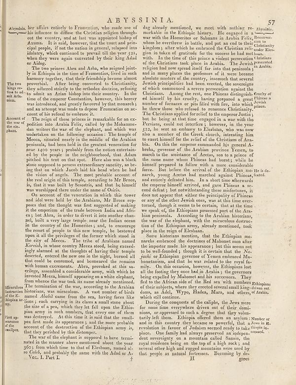

Source · scan and Parse blocks
Layers 2

Parse text by block reading order
- 0Page-headerABY S SINIA. 57
- 1TextAbyssinie her affairs entirely to Frumentis, who made use of his influence to define the Christian religion through- out the country, and at last was appointed bishop of Axuma. It is said, however, that the court and principal people. I don’t run nation in general, related into idolary, which continued to prevail till the year 231 when they were again converted by their king Adal or Atlas.
- 2TextThe two things are these prineses it remarkable for an ex- pedition into Arabic Policy, called by the Mohamar dan writers the war of the elephant, and which was undertaken on the following occasion: The temple of Mecca, situated nearly in the middle of the Arabian peninsula, had been held in the greatest western tourists for near 1200 years, probably from the notion entertained by the people in the neighbourhood, that Adam pitched his tent on that spot. Here also was a black stone supposed to possess extraordinary sanctity, as be ing that on which Jacob laid his head when he had the vision of angels. The most probable account of the real origin of this temple, according to Mr Bruce, is, that it was built by Sesostris, and that he himself was worshipped them under the name of Chris.
- 3TextOn second time the reservation in which this tower and ideal were held by the Arabilians, Mr Bruce supposes that the thought was first suggested of making the emoments of the trade between India and Africa as , but Abra, in order to divert it into another chapel, built a very long temps; near the Indian ocean in the country of the Homeries (and, to encourage the resort of people to this one temps), be bestowed upon all all the privilege of the former which stood in the city of Mecca. The tribe of Arabians named _Kevield_, in whose country Mecca stood, being enoughly alarmed at the historic temple deserted, entered the new one in the night, burned all that could be economic, and bonsent the remains with human occurrences. Abra, provoked us this any college, assembled a considerable army, with which he invested Mecca, himself appearing on a white elephant from whence the war took its massive already mentioned.
- 4TextThe translation of the way, according to the Arabian historian, was mirinculous, the was mother of the named _Aobhli_ came from the sea, having faces like lion; s each carrying in its class a small stone about the size of a pen, which they fell full name the Ethiopian army in such numbers, that every one of them was dettryed. At this time it is said that the manifest more than the more people account of the destruction of the Ethiopian army is, that the perished by the disemperor.
- 5TextThe war of the elephant is supposed to have terminated in the manner above mentioned about the year $60, from which time to that of Elisbean, named al- so _Clade_, and probably the same with the Adal or Av.
- 6Textdag already mentioned, we meet with nothing re- Abyssinia. markable in the Ethiopia history. He engaged in work with the Homestor or Babaani in Anda Poliv, discover whom ho overthrow in battle, and put an end to their seen to kingdom, after which he established the Persian rule under Electionion to token of gratitude for the success he had metals with. In the time of this prices a violent personetion Christians of the Christians took place in Arabia. The Jewish expressed religion had now spread itself far since that penalists in Arabia. and in many places the professor of it were become absolute monsters of the country, insonish that several Jewish principlesit had been erected, the sovereigns of which commenced a severe personetion against the Christians. Alonging the rest, one Chinese distinguished Creety of ed himself by his cruelty, having prepared a great Chinese a number of formats or pist filled with fun, into which Polish phrase.
- 7TextThe Christians applied for relief to the Emperor Junta; but it was being at that time singed in as with the Persian, could intereire; however, in the year 232, he sent an embay to Elisban, who was now also a member of the Greek church, interesting him to exert himself for the relief of the Christians of Arabs. On this the empermanoman his general Abeida, governor of the Arabian province Yemen, to match the assistance of Arctas, son to a prison of the same name whom Phineas had born;) while he promised me to follow with a more considerable force. But before the arrival of the Ethiopian mo He is de- ranch, young Arctes had murdered against Phinase feated. and entirely defend him. In a short one afterwards the emperor himself arrived, and gave Phinas a second defeat, justwithstanding these modernism, it does not appear that certain the priving of Elisbanan or any of the other Jewish ones, was at this time overturned, though it seems to be certain, that at the time we speak of, the Ethiopians possessed part of the Arabsian peninsula. According to the Arabian historians, the war of the eliphans with the mirrored destruction of the Ethiopian army, already mentioned, took place in the reign of Elisbanan.
- 8TextSore hinternation mention, that the Ethiopian moarchs enslined the destes of Mahomet soon after the imported made the appearance; In this season set to be well-founded, jung it is certain that the No- _Julhi_ or Ethiopian governor of Yemen embraced Ma- homestants, and that he was related to the royal family. On this invasion, however, the Ethiopian has still the footing they once had in Arabia;; the governors being expelled by Mahomet and his succursers. They fled to the African state of the Had se with members Ethiopians of their subjects, where they erected several small king-driven eat domes, as Adelaide, Wypo, Hadea, Mara, and others of Arabia, which side continues.
- 9TextDuring the conquests of the calipts, the Jews were for some time everywhere driven out of their dominiens, suppressed such a degree that they ultimately left them. Ethiopia offered them an asylum "Number or and in this country they became so powerful, that a Jew to address in honor of Judainn seemed ready to take objects". One family had always preserved and indepoc- created.
- 10Textdess sovereignty, on a mountain called Sumus, the royal residence being on the top of a high rock; and several other high and rugged mountains were used by that people as natural fortresses. Becoming by de-
Provenance page_id, checksum, Parse model
- page_id
- britannica:309f765b1ecc83e0a7f7762e44b4a927a7555443:train:2569
- sha256
- e8e9334880f9e63008622bc2d1196536177dfc1b0a45b3abf304dbcf2a4e72e7
- Parse
- nvidia/nemotron-3.5-parse · finish stop